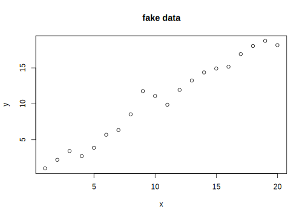

Tag 1 Los Geht’s
1.1 Grundlegend Strukturen in R
Da R eine Programmiersprache ist befassen wir uns zunächst mit der grundlegenden Syntax sowie den basis-Datenstrukturen, in denen wir Daten in R vorfinden können.
Öffne ein R-Script (eine Textdatei mit der Endung .R; In RStudio der Button oben
links, oder der Shortcut Ctrl+Shift+N)1.
Nun kannst du die folgenden Befehle selbst ausprobieren, indem du sie in das
Script schreibst (oder kopierst) und mit dem Shortcut Ctrl+Enter
in die Konsole schickst. Dort wird dann die ausgewählte Zeile / der markierte Code ausgeführt und das Ergebnis angezeigt.
Inspiriert wurde diese Zusammenfassung von learnXinYminutes. Die aufgeführten
Konzept liegen der Funktionsweise von R zu Grunde, dennoch ist
tieferes Verständnis nicht zwingend notwendig, um effektiv mit
Werkzeugen wie den Packages des tidyverse zu arbeiten. Daher: nicht verzweifeln,
wenn unweigerlich etwas nicht funktioniert! Das ist völlig normal.
Selbst erfahrene Programmierer stolpern regelmäßig über
fehlende Kommata oder Klammern.

Abb. 1.1: The most important programming advice.
1.1.1 Rechnen
# Kommentare starten mit dem #-Symbol.
# Diese Zeilen tun also nichts.
# Aber erinnern Dein zukünftiges Ich daran, was du eigentlich vor hattestZahlen in R können als ganze Zahlen (integer),
rationale Zahlen (numeric oder auch double) oder, wenn
auch selten verwendet, als komplexe Zahlen (complex) vorliegen.
Zusätzlich gibt es noch text (character) und Wahr/Falsch (boolean oder auch logical)
sowie kategorische Daten (factor), NULL und Not Assigned (NA).
# Integer (gekennzeichnet mit L hinter der Zahl)
5L
# Numeric
5
5.3
# Complex
3 + 4i
# Character (doppelte oder einfache Anführungszeichen sind erlaubt)
"Horatio"
'Horatio'
# logical
TRUE | FALSE
# factor
# The factor class is for categorical data
# Factors can be ordered (like grade levels) or unordered (like gender)
factor(c("f", "m", "m", NA, "f", "nb"))
# NULL
NULLWerte können Variablen zugewiesen werden, um später Zugriff darauf zu haben.
# Namen in R dürfen Buchstaben und Zahlen sowie _ enthalten.
# Großschreibung macht einen Unterschied
avogadro <- 6.02e23
# Neben der normalen Art der Zuweisung ( mit <- )
# funktioniert auch Folgendes
eulers_number = 2.718282
"Harry Potter" -> main_characterDen Inhalt der Variable erhältst du, indem du nur den die Variable in der Konsole ausführst oder mit Ctrl+Enter in die Konsole schickst:
# Implizit ist es eine Abkürzung für print(main_character)
main_character## [1] "Harry Potter"Grundlegende Rechenfunktionen:
10L + 66L
53.2 - 4
2.0 * 2L
3L / 4L
5 %/% 2 # Modulo
5 %% 2 # Rest
0 / 0 # NaN = Not a Number1.1.2 Funktionen und Vektoren
Funktionen sind mit das Wichtigste in einer Programmiersprache. Funktionen in R erkennst du an den Klammern, zwischen die die Argumente/Parameter der Funktion gehören. Gemeint sind nicht nur mathematische Funktionen, alles, das etwas tut, ist eine Funktion.
sin(pi / 2)## [1] 1?funktion öffnet die Hilfe zu dieser Funktion (in RStudio rechts unten)
und ist damit der wohl wichtigste Befehl überhaupt. Noch schneller
ist der Shortcut F1, wenn der Cursor über einer Funktion ist.
Niemand merkt sich alle Befehle, also nutzte die Hilfe reichlich!
?sinAlle Werte in R, selbst einzelne, sind Vektoren, also eine Reihe Dinge der gleichen Art. Die meisten Operationen in R arbeiten automatisch elementeweise mit Vektoren.
# c steht für combine oder concatenate
vector1 <- c(3, 3, 3, 2, 2)
vector2 <- vector1 + vector1
vector2## [1] 6 6 6 4 4vector1 * 2## [1] 6 6 6 4 4Der : Operator erstellt einen Vektor mit den Zahlen
von a bis b für a:b. Mehr Kontrolle bietet die Funktion seq für sequence.
viele_zahlen <- 1:1000
gerade_zahlen <- seq(from = 2, to = 1000, by = 2)Vergleiche zwischen Elementen/Dingen:
TRUE == FALSE # Vergleich, Ergebnis ist FALSE
TRUE != FALSE # Ungleich, TRUE
1 < 3 # TRUE
FALSE | TRUE # Oder
FALSE & TRUE # Und
# Applying | and & to vectors returns elementwise logic operations
c(TRUE,FALSE,FALSE) | c(FALSE,TRUE,FALSE)Hier noch einmal die Erinnerung, dass eine Fehlermeldung kein Weltuntergang ist. In diesem Code ist beispielsweise ein Komma zu viel:
c(1,3,)## Error in c(1, 3, ): argument 3 is emptyIm Zweifel gilt immer der Rat aus Abbildung 1.1.
Bei der Kombination von unterschiedlichen Datentypen wird automatisch der gewählt, der mehr zulässt.
c(1.4, 5L)## [1] 1.4 5.0c(12, "text")## [1] "12" "text"# Oder explizit:
as.character(12)## [1] "12"as.integer("12")## [1] 12Du kannst deine eigenen Funktionen definieren:
## Everything that does something is a function, everything that exists is an object
greet <- function(name) {
paste("Good morning", name)
}
greet("Jannik")## [1] "Good morning Jannik"1.1.3 Datenstrukturen
1D, gleicher Datentype: Vector
vec <- c(8, 9, 10, 11)
# We ask for specific elements by subsetting with square brackets []
# (Note that R starts counting from 1)
vec[1]
letters[18]
letters[1:3]
# Subsetting mit einem logical vector
selectThis <- vec %% 2 == 0
vec[selectThis]
# Oder mit den Indices
vec[which(vec %% 2 == 0)]Praktische Funtionen für Vektoren:
# grab just the first or last few entries in the vector,
head(vec)
tail(vec, 2)
# or figure out if a certain value is in the vector
any(vec == 10)
# If an index "goes over" you'll get NA:
vec[6]
# You can find the length of your vector with length()
length(vec)
# You can perform operations on entire vectors or subsets of vectors
vec = vec * 4
vec[2:3] * 5
any(vec[2:3] == 8)
# and R has many built-in functions to summarize vectors
mean(vec)
median(vec)
var(vec)
sd(vec)
max(vec)
min(vec)
sum(vec)1D, beliebige Datentypen: List
meine_liste <- list(12, 'dog', 1:10)
# Einfache [] geben eine Teilliste zurück
meine_liste[2]
# Doppelte [[]] geben das Element der List (entpackt aus der Liste) zurück
meine_liste[[2]]
# Listen und Vektoren können Namen haben
names(meine_liste) <- c("zahl", "hund", "vector")
# Die Namen identifizieren die Elemente und $ gibt das entsprechende Element zurück
meine_liste$zahl
meine_liste$vector2D, gleicher Datentyp: matrix
# You can make a matrix out of entries all of the same type like so:
mat <- matrix(nrow = 3, c(1,2,3,4,5,6), byrow = TRUE )
myMatrix <- matrix(ncol = 2, c(1,2,3,4))
# Ask for the first row
mat[1:2, ]
# Perform operation on the first column
3 * mat[, 1]
# Ask for a specific cell
mat[3,2]
# Transpose the whole matrix
t(mat)
# Matrix multiplication
mat %*% t(mat)
# cbind() sticks vectors together column-wise to make a matrix
mat2 <- cbind(1:4, c("dog", "cat", "bird", "dog"))
# Because matrices must contain entries all of the same class,
# everything got converted to the character class
# rbind() sticks vectors together row-wise to make a matrix
mat3 <- rbind(c(1,2,4,5), c(6,7,0,4))2D, beliebige Datentypen: data.frame
students <- data.frame(c("Cedric","Fred","George","Cho","Draco","Ginny"),
c(3, 2, 2, 1, 0, -1),
c("H", "G", "G", "R", "S", "G"),
stringsAsFactors = FALSE)
names(students) <- c("name", "year", "house") # name the columnsnrow(students)
ncol(students)
dim(students)
# The data.frame() function converts character vectors to factor vectors
# by default; turn this off by setting stringsAsFactors = FALSE when
# you create the data.frame
?data.frame
# There are many ways to subset data frames
# See if you can find out what each of these lines does
students$year
students[ , -c(1,3)]
students[, "year"]Eine fast so hilfreiche Funktion wie die Hilfe über ? ist die
Funktion str für structure
str(students)## 'data.frame': 6 obs. of 3 variables:
## $ name : chr "Cedric" "Fred" "George" "Cho" ...
## $ year : num 3 2 2 1 0 -1
## $ house: chr "H" "G" "G" "R" ...1.1.4 Die ersten Plots
Scatterplots
x <- 1:20
y <- x + rnorm(n = length(x) )
plot(x = x, y = y, main = "fake data")
Mit linearer Regression
model <- lm(y ~ x)
plot(x = x, y = y, main = "Linear Fit")
abline(model , col = 'red' )Kurven von Funktionen
curve(sin, from = -5, to = 5)
Histogramme
hist(y)Balkendiagramme
barplot(students$year + 2, names.arg = students$name)Mach es bunt!
barplot(students$year + 2,
names.arg = students$name,
col = factor(students$house) )Die Funktion par erlaubt das setzen von graphical parameters
wie der Hintergrundfarbe oder den plot margins. Es wirkt sich
auf alle Plots danach aus, bis die R session neu gestartet wird.
Dies ist das einzige Kuchendiagramm, dass du jemals brauchen wirst.
par(bg = "pink")
cols <- c('#0292D8', '#F7EA39', '#C4B632')
pie(
c(280, 60, 20),
init.angle = -50,
col = cols,
border = NA, labels = NA
)
legend(1, 1,
xjust = 0.5,
yjust = 1,
fill = cols,
border = NA,
legend = c('Sky', 'Sunny side of pyramid', 'Shady side of pyramid')
)Speichere deinen Plot indem du zunächst
ein Graphic-Device öffnest (png in diesem Beispiel),
dann den Plot erstellst und zum Schluss das Graphic-Device wieder
ausschaltest um das “Drucken” abzuschließen.
png('my_plot.png', width = 500, height = 400)
# ... Plot code (siehe oben) hier
dev.off()1.2 Project-based Workflow
Wichtige RStudio-Einstellungen:


Abb. 1.2: RStudio Einstellungen
1.3 Packages: Das Tidyverse
Packages sind Sammlungen von R-Funktionen anderer Nutzer, die dir unglaublich viel Arbeit abnehmen oder erleichtern.
# Installation
install.packages("tidyverse")
# Paket laden
library(tidyverse)Das tidyverse ist eine Gruppe von Packages, die gemeinsam installiert und geladen werden und sehr gut zusammespielen. Wir werden ausgiebig damit arbeiten.
Für Mac-Nutzer wird Ctrl durch Cmd ersetzt↩︎